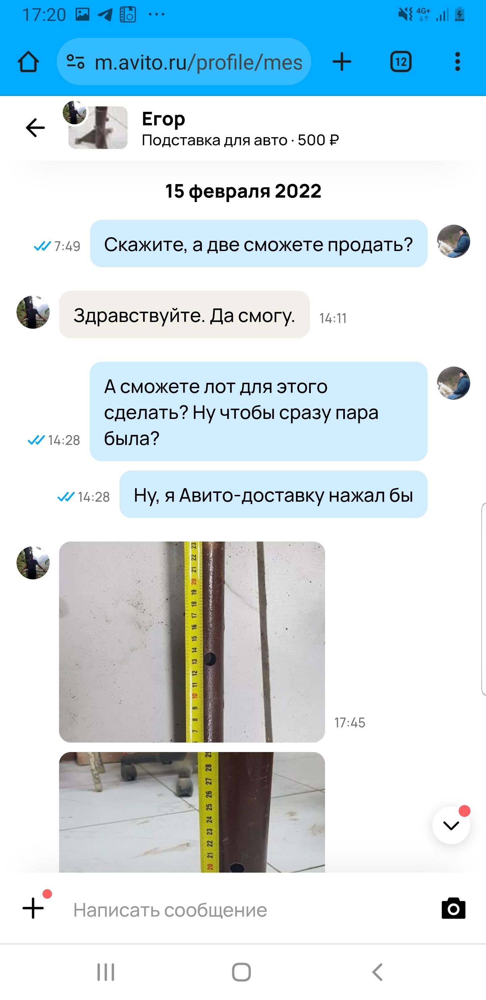
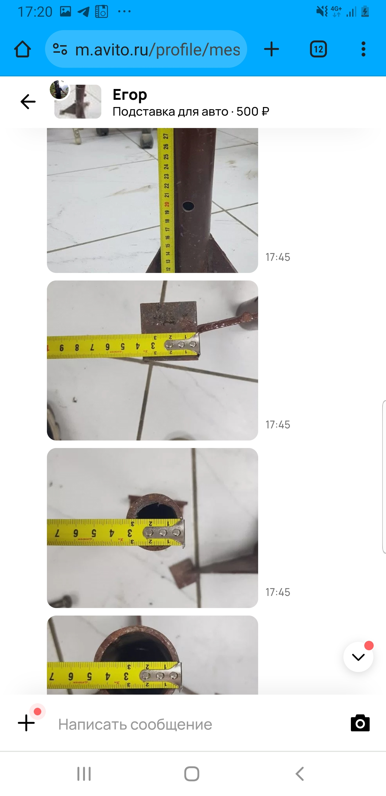
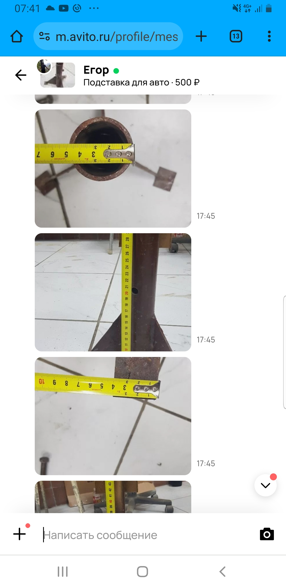
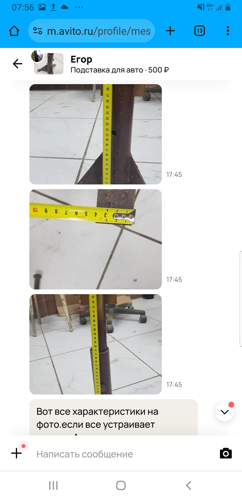
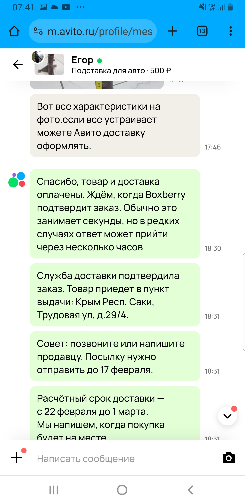
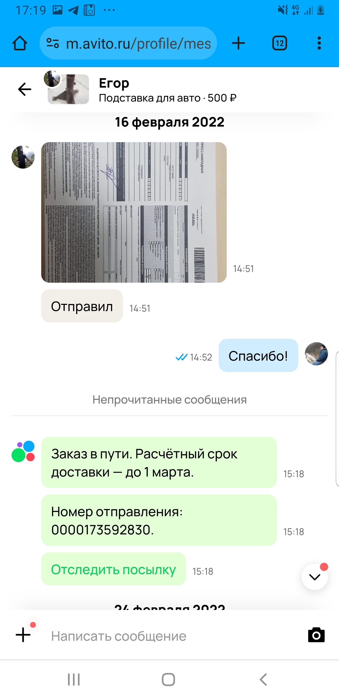
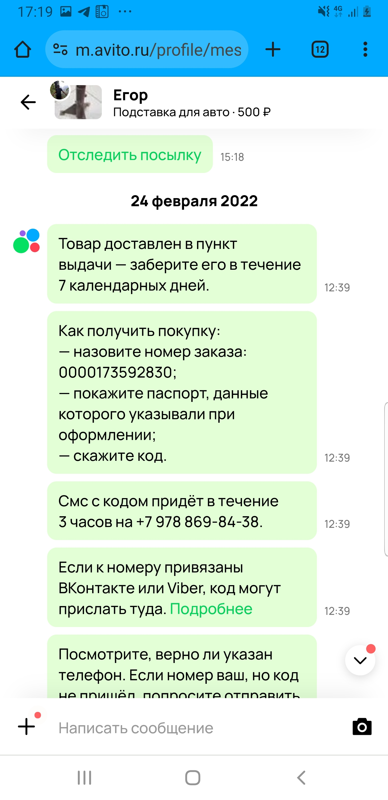
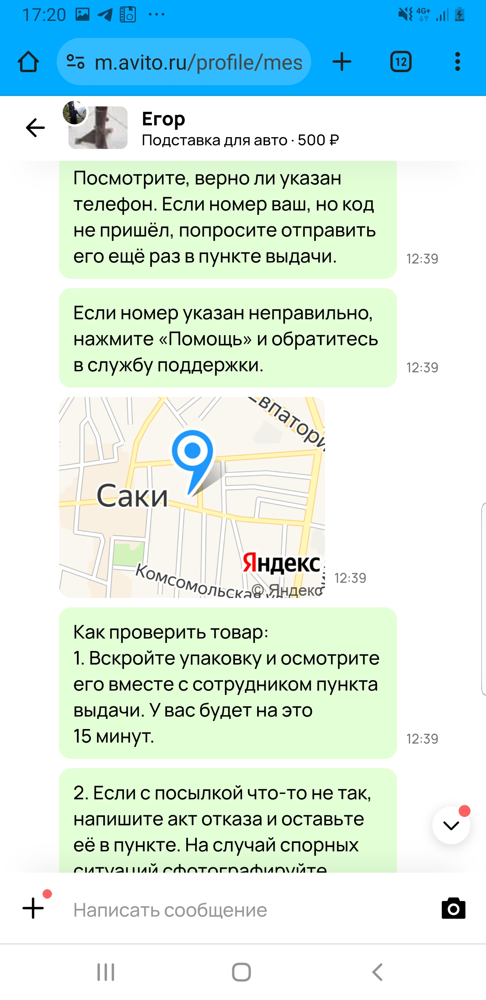
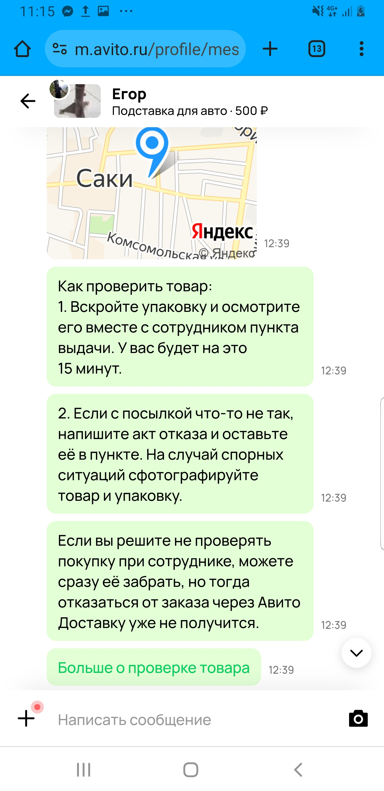
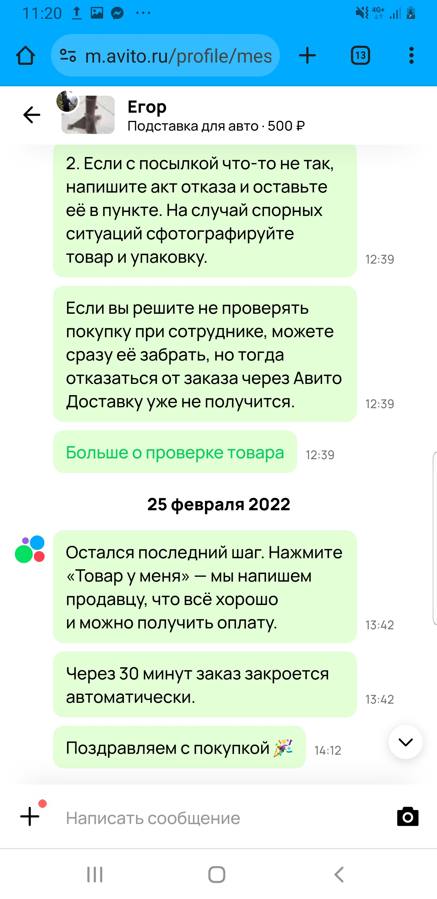

Am 15. Februar 2022 meldete ich einen Mann namens Jegor aus russischer Oblast Samara. Damals nteressierte ich mich sehr um ein Paar Beine aus dem Stahl, mit denen man ein Auto etwas heben kann (für eine Reparatur). Da sehen wir den Beginn der Unterhaltung. Ich wollte wissen, ob es wirklich um ein Paar oder nur um ein einzige Bein geht (er antwortet "ja" und bemaßt mir alle Größen des Geräts, schlagend sich in solchen Richtungen, sogar solche, die mir kaum ins Kopf kamen):
   
Nach einer kleiner Pause schickt er mir die Beine:


Ich erinnere mich, dass ich am 23. Februar im Kreiszentrum war, denn das Bild vor den Augen steht, wie ein russischer BTR versagte und auf der Straße stand. Die Besatzung stand nebenbei und versuchte seinen Wagen zu reparieren. (Ich fuhr mit dem Bus vorbei am Weg aus Kreiszentrum nach Hause und blickte ins Fenster). Am späten Abend hat mich eine meine Bekannte aus der nördlichen Teil der Krim telefoniert und teilte mir mit, dass sie eine riesige Menge von Panzer überm Feld sausenden beobachtet hatte.
  
Mir fehlt jeglicher Hinweis, was ich am Stichtag machte, hochwahrscheinlich im Dorf saß und die Nachrichten verfolgte. Schade, die Lage sieht so aus, dass ich die Beine nicht am Stichtag, sondern einen Tag später geholt habe, denn avito.ru gratuliert mich mit der Beendigung des Geschäfts am 25. Februar 13:42 (und seit diesem Moment musste die Organisation dem Verkaufer das Geld übergeben):
